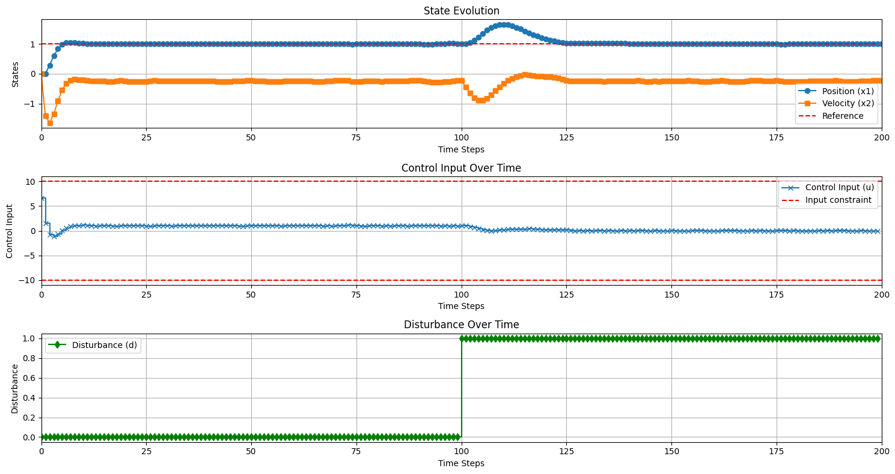

Simple offset-free MPC example
[1]:
import numpy as np
import matplotlib.pyplot as plt
import control
from openmpc.LinearMPC import MPCParameters, TrackingMPC, KalmanFilter
import numpy as np
import matplotlib.pyplot as plt
import control
# Define the system matrices
A = np.array([[0.95, -0.2],
[0.2, 0.95]])
B = np.array([[0],
[-0.2125]])
Bd = np.array([[0],
[-0.2125]])
C = np.array([[1, 0]])
Cd = np.array([[0]])
D = np.array([[0]])
# Create the state-space system (discrete-time)
sys_disc = control.ss(A, B, C, D)
# Define the cost matrices
Q = np.array([[100, 0], [0, 0]]) # State penalty
R = np.array([[1]]) # Input penalty
T = 20 # Prediction horizon
# Create the MPC parameters object
mpc_params = MPCParameters(system=sys_disc, horizon=T, Q=Q, R=R)
# Add the disturbance matrices to the MPC parameters
mpc_params.add_disturbances(Bd=Bd, Cd=Cd)
# Add input constraints (e.g., |u| <= 10)
mpc_params.add_input_magnitude_constraint(limit=10)
# Create the tracking MPC object
mpc_tracking = TrackingMPC(mpc_params)
# Kalman filter setup
Sigma_w = np.eye(mpc_params.A.shape[0] + mpc_params.Bd.shape[1]) * 0.01 # Process noise covariance
Sigma_v = np.eye(mpc_params.C.shape[0]) * 0.1 # Measurement noise covariance
kf = KalmanFilter(mpc_params, Sigma_w, Sigma_v, is_stationary=True)
# Initialize the Kalman filter state
kf.initialize_state(x0=np.array([0, 0]))
# Run the simulation
T_sim = 200
x0 = np.array([0, 0]) # Initial true state
reference = np.array([1.0]) # Constant reference
x_sim = np.zeros((2, T_sim + 1))
u_sim = np.zeros(T_sim)
reference_array = np.ones(T_sim) # Array to store the reference values
x_sim[:, 0] = x0
# Disturbance profile: 0 for the first 100 steps, +1 for the remaining 100 steps
disturbance_array = np.zeros(T_sim)
disturbance_array[100:] = 1
for t in range(T_sim):
current_state = x_sim[:, t]
disturbance = np.array([disturbance_array[t]])
# Get the noisy measurement
y_t = C @ current_state + Cd @ disturbance + np.random.normal(0, 0.01, size=C.shape[0])
# Kalman filter measurement update
kf.measurement_update(y_t, u_sim[t - 1] if t > 0 else 0)
# Get the state and disturbance estimates
x_hat = kf.get_estimated_state().flatten() # Flatten the estimated state to a 1D array
d_hat = kf.get_estimated_disturbance().flatten() # Flatten the estimated disturbance to a 1D array
# Get the control action based on estimated state and disturbance
u_t = mpc_tracking.get_control_action(x_hat, reference, d_hat)
u_sim[t] = u_t
# Update the true system dynamics
x_sim[:, t + 1] = A @ current_state + B @ np.array([u_t]) + Bd @ disturbance
# Kalman filter prediction update
kf.prediction_update(u_t)
# Plotting the simulation results
time = np.arange(T_sim + 1) # Time vector for states
time_u = np.arange(T_sim) # Time vector for control input
plt.figure(figsize=(15, 8))
# Plot states
plt.subplot(3, 1, 1)
plt.plot(time, x_sim[0, :], label='Position (x1)', marker='o')
plt.plot(time, x_sim[1, :], label='Velocity (x2)', marker='s')
plt.step(time_u, reference_array, where='post', linestyle='--', color='r', label='Reference')
plt.xlabel('Time Steps')
plt.ylabel('States')
plt.title('State Evolution')
plt.legend()
plt.grid()
plt.xlim([0, T_sim]) # Set x-axis limits to start at 0
# Plot control input
plt.subplot(3, 1, 2)
plt.step(time_u, u_sim, where='post', label='Control Input (u)', marker='x')
plt.axhline(10, color='r', linestyle='--', label='Input constraint')
plt.axhline(-10, color='r', linestyle='--')
plt.xlabel('Time Steps')
plt.ylabel('Control Input')
plt.title('Control Input Over Time')
plt.legend()
plt.grid()
plt.xlim([0, T_sim]) # Set x-axis limits to start at 0
# Plot disturbance
plt.subplot(3, 1, 3)
plt.step(time_u, disturbance_array, where='post', label='Disturbance (d)', color='g', marker='d')
plt.xlabel('Time Steps')
plt.ylabel('Disturbance')
plt.title('Disturbance Over Time')
plt.legend()
plt.grid()
plt.xlim([0, T_sim]) # Set x-axis limits to start at 0
plt.tight_layout()
plt.show()

[ ]: